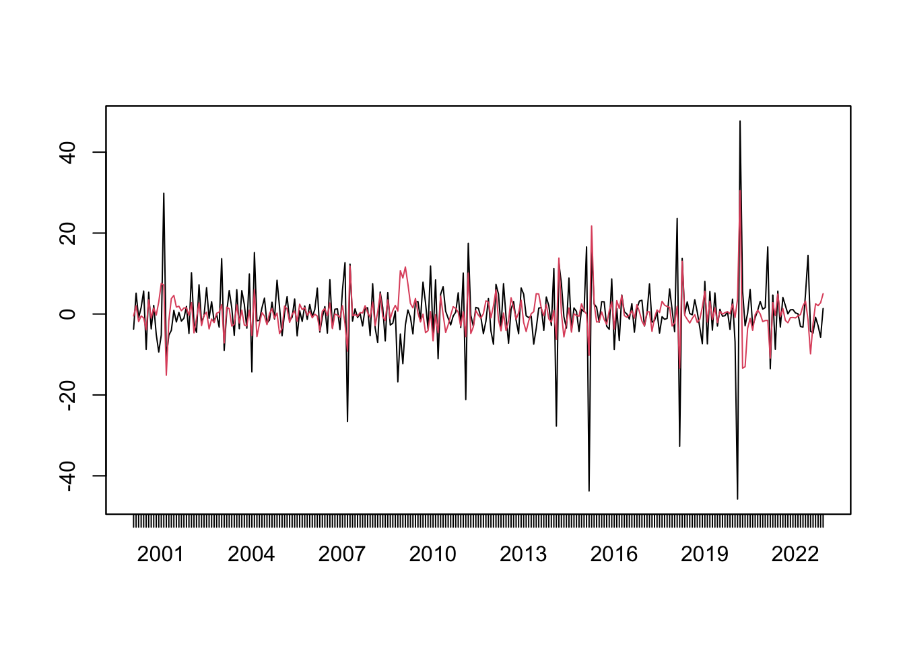
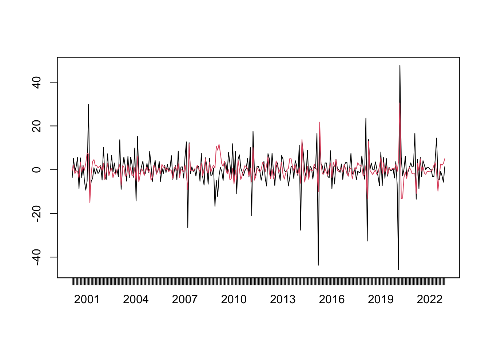

library(zoo)
data = read.csv.zoo("data/md.csv", FUN = as.yearmon, regular = TRUE)
y = data$Export
mod = arima(y, order = c(2,0,1))
yhat = y - mod$residuals
plot(cbind(y, yhat), plot.type = "s", col = 1:2, ann = F)
So far we have spent a lot of effort with ARMA models, which are the indispensable components of any time series textbook. The following theorem justifies its importance. The Wold Decomposition Theorem basically says every covariance-stationary process has an ARMA representation. Therefore, with long enough lags, any covariance-stationary process can be approximated arbitrarily well by ARMA models. This is a very bold conclusion to make. It sets up the generality of ARMA models, which makes it one of the most important theorems in time series analysis.
Theorem 9.1 (Wold Decomposition Theorem) Every covariance-stationary time series \(y_t\) can be written as the sum of two time series, one deterministic and one stochastic. Formally,
\[ y_t = \eta_t + \sum_{j=0}^{\infty} b_j\epsilon_{t-j}, \]
where \(\eta_t \in I_{-\infty}\) is a deterministic time series (such as one represented by a sine wave); \(\epsilon_t\) is an uncorrelated innovation sequence with \(\mathbb{E}[\epsilon_t]=0\), \(\mathbb{E}[\epsilon_t\epsilon_{t-j}]=0\) for \(j\neq 0\); and \(\{b_j\}\) are square summable, \(\sum_{j=0}^{\infty}|b_j|^2<\infty\).
Proof. We will prove the theorem by constructing the innovation sequence \(\{e_t\}\) and showing it satisfies the conditions stated. Let \(e_t = y_t - \hat{\mathbb{E}}(y_t|I_{t-1}) = y_t - a(L)y_{t-1}\), where \(\hat{\mathbb{E}}(y_t|I_{t-1})\) is the best linear predictor (BLP) of \(y_t\) based on information set at \(t-1\). \(a(L)\) does not depend on \(t\) because \(y_t\) is covariance stationary. As the best linear predictor, \(a(L)\) solves
\[\min_{\{a_j\}} \mathbb{E} (y_t - \sum_{j=1}^{\infty}a_jy_{t-j})^2.\] The first-order conditions with respect to \(a_j\) gives
\[ \begin{aligned} \mathbb{E}[y_{t-j}(y_t-\sum_{j=1}^{\infty}a_jy_{t-j})] &= 0, \\ \implies \mathbb{E}[y_{t-j}e_t] &=0. \end{aligned} \]
We now verify that \(e_t\) satisfies the white noise conditions. Without loss of generality, we may assume \(\mathbb{E}(y_t)=0\), it follows that \(\mathbb{E}(e_t)=0\). \(\text{var}(e_t)=\mathbb{E}(y_t-a(L)y_t)^2\) is a function of covariance of \(y_t\) and \(a_j\), none of which varies with time. So \(\text{var}(e_t)=\sigma^2\) is constant. Utilizing the first-order condition, \(\mathbb{E}[e_te_{t-j}] = \mathbb{E}[e_t(y_{t-j}-a(L)y_{t-j})] = 0.\)
Repeatedly substituting for \(y_{t-k}\) gives
\[ \begin{aligned} y_t &= e_t + \sum_{k=1}^{\infty} a_ky_{t-k} \\ &= e_t + a_1(e_{t-1} + \sum_{k=1}^{\infty} a_ky_{t-1-k}) + \sum_{k=2}^{\infty} a_ky_{t-k}\\ &= e_t + a_1 e_{t-1} + \sum_{k=1}^{\infty} \tilde{a}_ky_{t-k-1} \\ &= e_t + a_1 e_{t-1} + \eta_t^1 \\ &\quad\vdots\\ &= \sum_{j=0}^{k} c_j e_{t-j} + \eta_t^k, \end{aligned} \] where \(\eta_t^k \in I_{t-k-1}\). As \(k\to\infty\), we have \(v_t = y_t - \sum_{j=0}^{\infty}c_je_{t-j} \in I_{-\infty}\).
Let’s appreciate this theorem for a while. The property of stationarity can be loosely understood as having stable patterns over time. The Wold Theorem states that any such patterns can be captured by ARMA models. In other words, ARMA models are effective in modelling stable patterns repeated over time, in so far as only 2nd-order moments are of concern. Even if the time series is not entirely stationary, if we model it with ARMA, it can be thought as extracting the stationary patterns. Figure 9.1 demonstrates the ARIMA modelling of monthly export.
library(zoo)
data = read.csv.zoo("data/md.csv", FUN = as.yearmon, regular = TRUE)
y = data$Export
mod = arima(y, order = c(2,0,1))
yhat = y - mod$residuals
plot(cbind(y, yhat), plot.type = "s", col = 1:2, ann = F)
We have seen that AR models can be rewritten as MA models and vice versa, suggesting the ARMA representation of a stochastic process is not unique. We have also seen that a non-invertible MA process can be equivalently represented by an invertible MA process. For example, the following MA(1) processes have the same ACF:
\[ \begin{aligned} x_t &= w_t + \frac{1}{5} w_{t-1}, & w_t\sim\text{WN}(0,25);\\ y_t &= v_t + 5 v_{t-1}, & v_t\sim\text{WN}(0, 1). \end{aligned} \]
The same property holds for AR processes. In Chapter 6, we state that an AR(1) process is explosive if \(|\phi|>1\). This is not entirely rigorous. Consider an AR(1) process,
\[ y_t = \phi y_{t-1} + \epsilon_t, \text{ where } |\phi| > 1. \]
Multiply both sides by \(\phi^{-1}\),
\[ \phi^{-1} y_t = y_{t-1} + \phi^{-1}\epsilon_t, \]
Rewrite it as an MA process,
\[ \begin{aligned} y_t &= \phi^{-1} y_{t+1} - \phi^{-1}\epsilon_{t+1} \\ &= \phi^{-1} (\phi^{-1} y_{t+2} - \phi^{-1}\epsilon_{t+2}) - \phi^{-1}\epsilon_{t+1} \\ &\;\vdots \\ &= \sum_{j=1}^{\infty} -\phi^{-j}\epsilon_{t+j}. \end{aligned} \]
Given \(|\phi^{-1}|<1\), the process is stationary, expressed as discounted innovations in the future (despite this looks quite odd). In fact, for an non-causal AR process, we can find a causal AR process that generates the same ACF (remember the term causal means an AR process can be converted to an MA process with absolute summable coefficients).
The problem is given an ARMA equation, it is not enough to uniquely pin down a stochastic process. Both the explosive process and the stationary process can be a solution to \(y_t = \phi y_{t-1} + \epsilon_t\). But for a stationary process expressed as an AR model with \(|\phi|>1\), we can always find an AR(1) process with \(|\tilde\phi|<1\) and a different white noise sequence \(\{\tilde\epsilon_t\}\) that generate the same ACF.
The following theorems state the conditions for the existence of stationary solutions, and the possibility of rewriting non-causal or non-invertible ARMA representations as causal and invertible ones. Since it is always possible to do so, it loses nothing to stick with causal and invertible ARMA processes when modelling stationary time series.
Theorem 9.2 A unique stationary solution to the ARMA process \(\phi(L)y_t = \theta(L)\epsilon_t\) exists iff \(\phi\) and \(\theta\) have no common factors and the roots of \(\phi(z)\) avoid the unit circle:
\[ |\phi(z)|=1 \implies \phi(z) = 1-\phi_1z-\dots-\phi_pz^p \neq 0. \]
Theorem 9.3 Let \(\{y_t\}\) be a stationary ARMA process defined by \(\phi(L)y_t = \theta(L)\epsilon_t\). If the roots of \(\theta(z)\) avoid unit circle, then there are polynomials \(\tilde{\phi}\) and \(\tilde\theta\) and a white noise sequence \(\tilde\epsilon\) such that \(\{y_t\}\) satisfies \(\tilde\phi(L)y_t = \tilde\theta(L)\tilde\epsilon_t\), and this is a causal and invertible ARMA process.